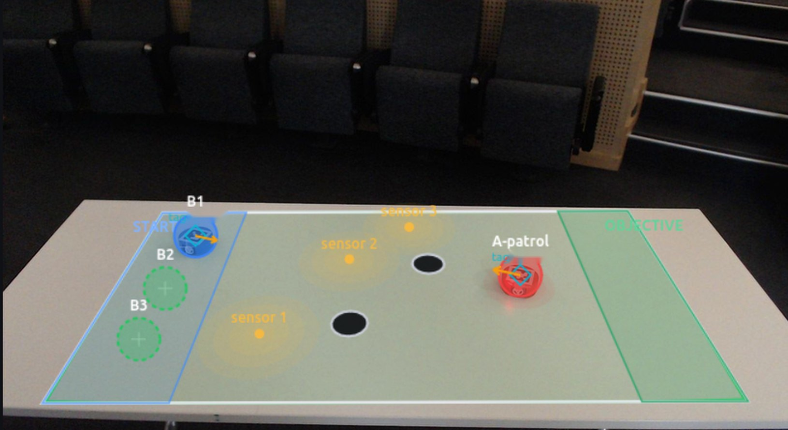
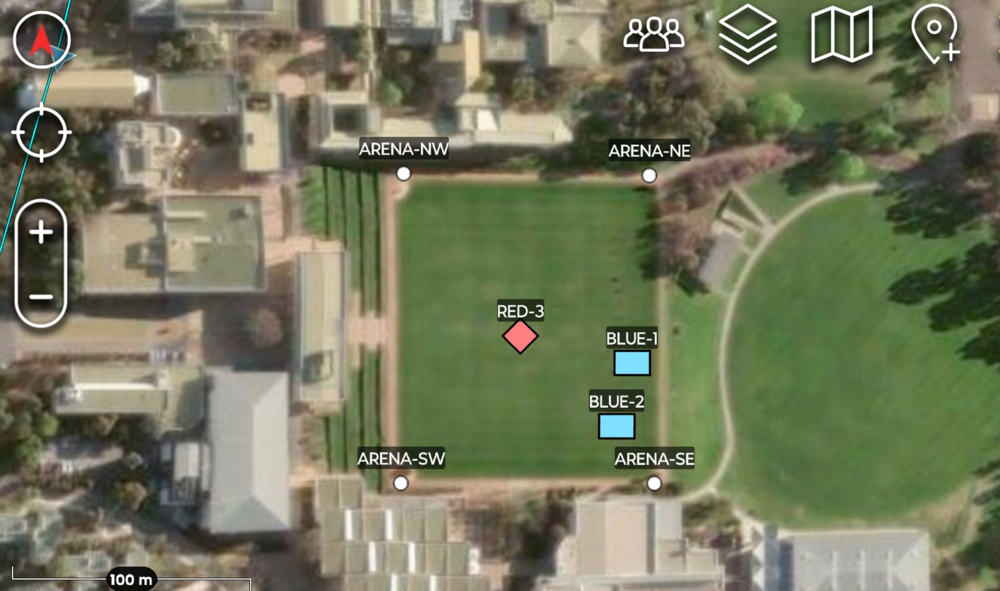
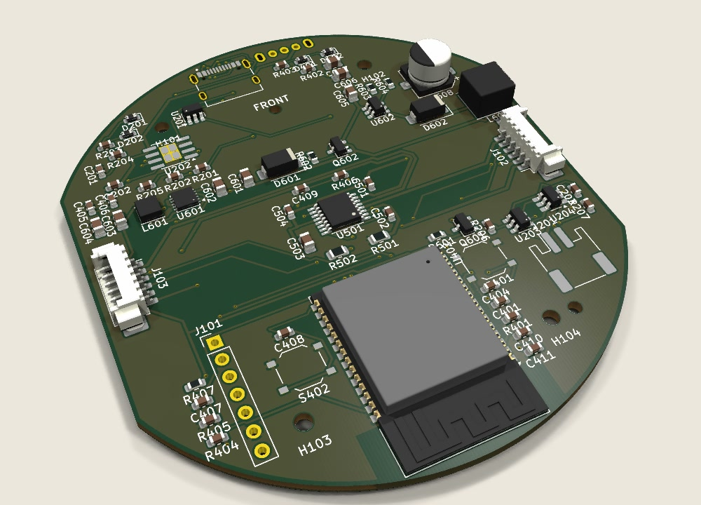

Real robots. Virtual force. One arena.
Plato Pod puts small robots on a desk and builds the battlefield around them in software: sensors, an opposing force, gas, weapons fire and rules of engagement. It is for teaching students to program and to plan, and for officers to rehearse on.
What Plato Pod is.
-
Pods on the desk
Small robots, 85 mm across, driven over Bluetooth and tracked by one overhead camera that reads a printed marker on each.
-
A world around them
Virtual units, simulated sensors, hazards and an opposing force share the arena with the pods, so a few robots stand in for a larger force.
-
A shared picture
The exercise appears in a browser and, laid over a real map, on ATAK, the Android Team Awareness Kit.
Set up in three steps.
A camera on a stand, a mini PC and the pods. No markers to lay out, no walls to build, nothing to install on a laptop.
-
1
Switch it on
The mini PC starts the platform by itself and opens its own Wi-Fi network. Join it from any laptop and the console opens in a browser.
-
2
Let a pod find the table
Put a pod under the camera and press Calibrate. It drives one small circle, and from that the system knows where the table lies.
-
3
Draw the arena
Click two corners of a rectangle on the screen, or trace another shape. The pods stay inside it.
For teaching and for rehearsal.

Teaching
Programming, control and decision-making on real robots, and a track that needs no code.
Explore teaching →

Military
Wargaming on a table, with an opposing force, rules of engagement, and the picture on ATAK.
Explore military use →

Technical
How it is built: the pods, the camera, the server, and an interface any language can drive.
Read the technical story →
Tell us what you want to teach or rehearse.
We will tell you whether the platform does it yet, and what it would take if it does not. Plato Pod has been used in teaching at UNSW Canberra and is available for demonstrations and pilots.
Office 302, Building 16UNSW Canberra at ADFA